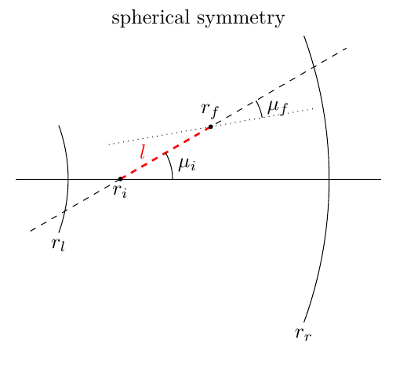
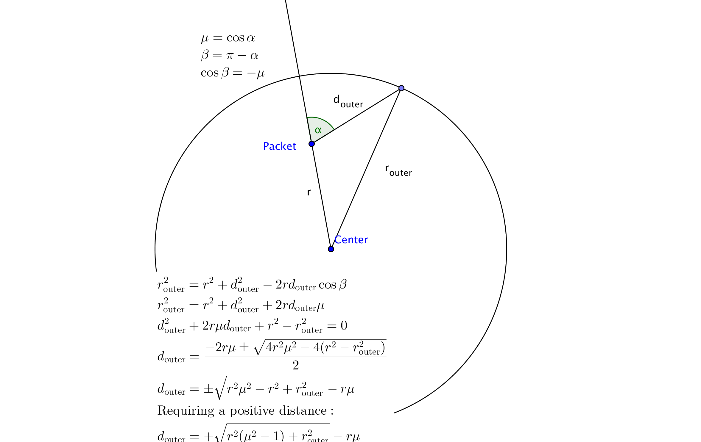

Packet Propagation¶
The bulk of a Monte Carlo Radiative Transfer calculation is spent on determining the propagation history of the different packets. After a packet is initialized (see Energy Packet Initialization), it is launched and may then perform interactions with the surrounding material. This occurs again in a probabilistic manner. The packet propagation is followed until it escapes through the outer boundary of the computational domain, at which point the packet contributes to the synthetic spectrum, the main product of a TARDIS calculation. The different spectral features are simply a combined product of the changes in the packet properties induced in the radiation-matter interactions.
Propagation in a Spherical Domain¶
Once the initial packet properties are assigned, the propagation process commences. Without interacting, a packet, like a photon, will propagate on a straight trajectory.
Note
Since TARDIS is designed for systems for which the Newtonian limit may be safely applied, no general relativistic effects which would force photons on curved trajectories are included.
In spherical geometry, this propagation process may be illustrated by the following sketch (taken from [Noebauer14]):
{kind=link}
The packet starts the propagation at \(r_i\) along the direction \(\mu_i\). After covering a distance \(l\), the packet is now located at
Note that the propagation direction has also changed and now takes the value
Supernova Expansion¶
Note
This section is a summary of part of Model which is included here for easy reference. For a complete explanation, please refer back to that page.
TARDIS models supernovae as expanding homologously, as shown in the animation below. This means that plasma at a distance \(r\) from the center of the supernova will be moving outwards at a velocity \(v=\frac{r}{t_\mathrm{explosion}}\), where \(t_\mathrm{explosion}\) is the time after the explosion for which TARDIS is running (which is provided in the model configuration). This is also shown in the animation.
TARDIS simulates radiative transfer between an inner boundary (the photosphere) with a radius \(r_\mathrm{boundary\_inner}\), and an outer boundary (the outer edge of the supernova ejecta) with a radius \(r_\mathrm{boundary\_outer}\). Additionally, TARDIS divides the space between the inner and outer computational boundaries into cells – radial shells for which the plasma state is (spatially) constant. In the animation, 6 cells are shown, being divided by the light blue lines. The boundaries of the computational domain and of these cells are computed during the simulation setup (refer back to Model). As TARDIS is a time-independent code, meaning that it calculates the spectra at an instant in time (namely at the time \(t_\mathrm{explosion}\)), the radii of the boundaries (both of the computational domain and of the cells) do not change throughout the simulation.

Reference Frames¶
Because ejecta in the supernova is moving, TARDIS must take reference frames into account.
In TARDIS, two reference frames are of particular importance: the lab frame and the co-moving frame. In the lab frame, the center of the supernova is at rest; for example, the animation above is shown in the lab frame. This is the frame for which the spectra are calculated.
The co-moving frame at some point in the supernova, however, has the plasma at that point be at rest. This is the frame of reference “according to the plasma.”
If a photon is propagating in the ejecta with a frequency \(\nu_\mathrm{lab}\) in the lab frame and a propagation direction \(\mu\), the doppler effect says that in the co-moving frame at a distance \(r\) from the center of the supernova, the photon’s frequency is shifted to
where \(\beta = \frac{v}{c} = \frac{r}{ct_\mathrm{explosion}}\) (note again that \(v\) is the velocity of the plasma at a radius \(r\) from the center of the supernova). The term \(\frac{1-\beta\mu}{\sqrt{1-\beta^2}}\) is known as the doppler factor. In the nonrelativistic limit (as \(v << c\)), we get
Note that if the photon is propagating away from the center of the supernova (\(\mu>0\)) it is red-shifted (\(\nu_\mathrm{co-moving}<\nu_\mathrm{lab}\)), and if the photon is propagating towards the center of the supernova (\(\mu<0\)) it is blue-shifted (\(\nu_\mathrm{co-moving}>\nu_\mathrm{lab}\)).
Numerical and Physical Events¶
While a packet is propagating through the computational domain, TARDIS calculates the distance the packet will propagate until it (i) crosses into a new cell and (ii) interacts with the plasma in the ejecta. If the former distance is shorter, the packet will be moved into the new cell (and the plasma properties will be recalculated), and if the latter distance is shorter, the packet will be moved to the location of the interaction, and the interaction will be performed.
Distance to Next Cell¶
Note
In this documentation, and in TARDIS as a whole, the subscripts “inner” and “outer” refer respectively to the inner an outer boundaries of a cell. The subscripts “inner_boundary” and “outer_boundary” refer respectively to the inner and outer boundaries of the computational domain.
As previously mentioned, the physical properties of the plasma are stored in a discrete mesh of cells for which the plasma state is spatially constant. As a consequence, whenever a packet propagates into a new cell, important quantities which are relevant for performing radiation-matter interactions have to be re-evaluated in accordance with the new state of the ambient material. Thus, during the packet propagation, the distance to the next radial shell is tracked to predict when the packet crosses into a new shell. The following figures summarize the calculations of these distances:
The calculations for the distance to the outer cell boundary:
{kind=link}
The calculations for the distance to the inner cell boundary:
{kind=link}
Special care is taken at the edges of the computational domain. If a packet crosses back into the photosphere, it is discarded. Its propagation is stopped and it is no longer considered. Instead, processing the next packet of the population is started. Similarly, the propagation is stopped if the packet escapes through the outer surface of the domain. However, in this case the packet contributes to the final emergent spectrum (see Spectrum Formation).
When a packet is moved into a new cell, as mentioned before, it is moved to the location at which it crosses the boundary, the plasma properties are recalculated, and the propagation direction of the packet is updated (using \(\mu_f = \frac{l + r_i \mu_i}{r_f}\)).
Physical Interactions¶
As a packet propagates through the computational domain, physical radiation-matter interactions can trigger changes in the packet properties. The probability that a photon/packet will interact with matter is characterized by its optical depth \(\tau\); the probability that a packet will have interacted after going through an optical depth \(\Delta \tau\) is \(1-e^{-\Delta \tau}\) (see Opacity and Optical Depth for more). To model this (see Random Sampling), the packet is assigned a random value of optical depth \(\tau_\mathrm{interaction} = -\log z\) (for another random \(z\) between 0 and 1), and upon reaching that optical depth, the packet will interact.
TARDIS considers two different radiation-matter interactions within the simulation: electron scattering and atomic line interactions (see Light, Matter, and How They Interact for a basic introduction to these interactions). As packets propagate, they accumulate optical depth due to the possibility of going through either of these interactions. Since the main focus of TARDIS is to calculate optical spectra, electron-scatterings are treated in the elastic low-energy limit as classical Thomson scatterings. In this case, the electron scattering process is frequency-independent. As a consequence to the frequency independence, the rate at which a packet accumulates electron scattering optical depth depends only on the free electron density \(n_e\). The optical depth that a Monte Carlo packet accumulates along a path of length \(l\) due to Thomson scattering is calculated by the formula
The Thomson cross section \(\sigma_{\mathrm{T}}\), which is a constant, appears here. This corresponds to the fact that a packet has a probability of \(1-e^{-\sigma_{\mathrm{T}} n_e l}\) of going through a Thomson scattering prior to traveling a distance \(l\) (in other words, the probability of the packet making it across a distance \(l\) without scattering is \(e^{-\sigma_{\mathrm{T}} n_e l}\)).
The situation is complicated by the inclusion of frequency-dependent bound-bound interactions, i.e. interactions with atomic line transitions. Photons and thus Monte Carlo packets can only interact with a line transition if their frequency in the co-moving frame corresponds to the energy difference between the atomic levels linked by the transition, i.e. if it comes into resonance. As discussed above, as a photon/packet propagates through the homologously expanding ejecta, its co-moving frame frequency is continuously red- or blue-shifted (depending on the packet’s propagation direction). Thus, during its propagation through the supernova ejecta, a photon/packet may come into resonance with many line transitions. This and the fact that line transitions have a finite width given by the line profile function (in the case at hand, this width is mainly given by thermal broadening) would render the determination of the line optical depth accumulated along the photon/packet trajectory a complicated task. Fortunately, the typical conditions in supernova ejecta warrant the use of the so-called Sobolev approximation. Roughly speaking, this approximation replaces the line profile function with a \(\delta\) distribution around the natural line frequency. Thus, photons/packets may only interact with a line transition if their co-moving frame frequency exactly equals the natural frequency of the line. The location at which this occurs is referred to as the resonance or Sobolev point. This effectively reduces the line optical depth determination to a pure local problem.
If a packet with a frequency \(\nu_\mathrm{lab}\) in the lab frame is at a radius \(r_i\) with a propagation direction \(\mu_i\), the distance that the packet must travel to reach the next Sobolev point is calculated by setting the frequency of the packet in the co-moving frame at the Sobolev point equal to the resonant frequency that it will next hit, which we will label \(\nu_\mathrm{line}\) (which is, of course, in the co-moving frame). Using the nonrelativistic doppler shift formula, we get
where the subscript \(f\) refers to being at the sobolev point. Using \(\beta_f=\frac{r_f}{ct_\mathrm{explosion}}\) and \(\mu_f = \frac{l + r_i \mu_i}{r_f}\), we get that the distance \(l\) to the next Sobolev point is
where \(\nu_{\mathrm{CMF},i}\) is the frequency of the packet in the co-moving frame at the initial position.
At a Sobolev point, the packet instantaneously accumulates optical depth, the value of which is called the Sobolev optical depth \(\tau_\mathrm{Sobolev}\) (see Sobolev optical depth). This corresponds to a probability of \(1-e^{-\tau_\mathrm{Sobolev}}\) that the packet interacts with the atomic line.
Distance to Next Event¶
With these assumptions, the accumulation of optical depth along a packet’s trajectory currently proceeds according to the following scheme (which was originally introduced by [MazzaliLucy93]): given the current lab-frame frequency of the packet, the distance to the next Sobolev point (i.e. to the next line resonance) is calculated as discussed above. Until this location, the packet continuously accumulates optical depth due to the possibility of electron-scattering. At the Sobolev point, the accumulated optical depth is instantaneously incremented by the Sobolev optical depth. Afterwards, the procedure is repeated, now with respect to the next transition in the frequency-ordered list of all possible atomic line transitions. The point at which the accumulated optical depth reaches the randomly generated interaction optical depth \(\tau_\mathrm{interaction}\) determines the type of interaction the packet performs and at which location in the spatial mesh, as shown with the example cases in the sketch below (taken from [Noebauer14], adapted from [MazzaliLucy93]):

Three possible cases are highlighted in the above diagram, with the dotted lines showing the (randomly assigned) optical depth \(\tau_\mathrm{interaction}\) at which the packet interacts. In case I, the interaction optical depth value is reached on one of the path segments between successive Sobolev points, where the packet is accumulating electron scattering optical depth. Thus, the packet performs a Thomson scattering at the point at which its accumulated optical depth reaches \(\tau_\mathrm{interaction}\). In case II, the interaction optical depth is reached during the instantaneous increment by the line optical depth at one of the Sobolev points. As a consequence, the packet performs an interaction with the corresponding atomic line transition. In both of these cases, the packet is moved to the interaction location, the interaction will be performed (as will be described in the next section), and the process of accumulating optical depth starts over. Finally, if the packet reaches the shell boundary before the optical depth value necessary for a physical interaction is achieved (as in case III), the packet will be moved to the next cell, the plasma properties will be updated, and the accumulation of optical depth will restart in the next cell.
Note
While it would make physical sense for the accumulation of optical depth to continue between cells until the packet eventually interacts, due to the exponential nature of optical depth and interaction probabilities, both continuing and restarting the accumulation of optical depth between cells can be mathematically shown to yield the same overall statistical results. Restarting the optical depth accumulation is computationally easier, and hence it is the method employed by TARDIS.
Performing an Interaction¶
When a physical interaction occurs, whether it is a Thomson scattering or a line interaction, the packet is moved to the interaction location and a new propagation direction is assigned. Since this process is isotropic, the new direction is sampled according to (see Random Sampling)
using a new random \(z\) (between 0 and 1).
For Thomson scattering, the energy of the packet in the co-moving frame is conserved, and thus the new energy and frequency of the packet in the lab frame (due to the doppler effect) is:
Here, the subscripts highlight the packet properties before (\(i\) for initial) and after (\(f\) for final) the scattering. Note that \(\mu_i\) is the propagation direction prior to the interaction but at the interaction location.
For line interactions, the energy of the packet after the interaction is still given by the same formula (based on energy conservation in the co-moving frame). However, the post-interaction frequency depends on the selected line interaction treatment (see Line Interaction Treatments).
The ratio \(\frac{1 - \beta \mu_i}{1 - \beta \mu_f}\) can be visualized with the following graph for a plasma speed of \(1.1 \times 10^4\) km/s:
(Source code, png, hires.png, pdf)
{kind=link}
{kind=link}

Implementation: Main Propagation Loop¶
In summary of the concepts outlined above, the main Monte Carlo process within TARDIS consists of successively processing all packets with represent the radiation field emitted by the photosphere in the following way:
initialize the packet: assign initial energy, direction and frequency
launch the packet: now the propagation of this packet is followed until one of the termination events is triggered
- follow the propagation:
calculate the distance to the next shell and determine the distance to the next physical interaction
- the packet covers the shorter of these two distances:
if the new shell is reached first, propagate into the shell and recalculate both distances
if the packet has crossed through the inner domain boundary (photosphere), terminate propagation
likewise, in case the packet escapes through the outer boundary (ejecta surface): account for contribution to emergent spectrum and terminate propagation
if the interaction location is reached first, propagate to this location, perform interaction and recalculate both distances
repeat this procedure until one of the two termination events occurs
The following flow chart summarizes this process again: